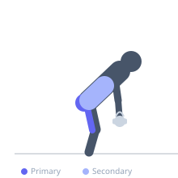
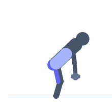

Exercise guide / Single-Leg Romanian Deadlift
Single-Leg Romanian Deadlift
The single-leg Romanian deadlift is a unilateral hip-hinge exercise performed standing on one leg while the opposite leg extends behind for counterbalance as the torso hinges forward. It provides all the hamstring and gluteus maximus benefits of the bilateral Romanian deadlift while adding a significant demand for hip and core stability through the single-leg stance. It is excellent for identifying and correcting left-right asymmetries.
Primary muscles
biceps femoris long head
semitendinosus
semimembranosus
gluteus maximus
Secondary muscles
iliocostalis
gluteus medius
Stabilizers
tensor fasciae latae
gastrocnemius medial
transverse abdominis
Equipment
No Equipment (Bodyweight)
Optional
Dumbbell (Fixed)
Kettlebell


Starting position
- Stand on one foot. Hold a dumbbell or kettlebell in one or both hands (or no weight for a bodyweight version). The free leg extends slightly behind you.
Setup
- Begin with bodyweight to establish the balance and hip hinge pattern. Hold a dumbbell in the opposite hand to the working leg for a 'suitcase' loading style that improves stability, or hold weights in both hands.
Steps
- Step 1: Stand tall on the working leg with a soft knee. Hold the weight(s) in front of the thigh.
- Step 2: Hinge at the hip, pushing the hips backward as the torso leans forward and the free leg extends behind — the body forms a T-shape.
- Step 3: Lower the weight(s) toward the floor while keeping the spine neutral and the hips level (avoid rotating open toward the ceiling).
- Step 4: Hinge until the hamstring and glute are fully stretched or the torso reaches horizontal — whichever comes first without spinal rounding.
- Step 5: Drive through the working heel, contracting the glute and hamstring to return the torso to vertical and the rear leg to standing.
Coaching cues
- Hips level — don't let the free hip open up
- Reach the rear leg long — it counterbalances the forward torso
- Drive through the heel of the working foot to stand
Breathing
- Inhale before the descent. Hold or breathe gently during the hinge. Exhale at the top.
Range of motion
- Hinge until hips are level and spine is neutral — typically until the torso approaches horizontal. Quality over depth.
Tempo
- 3-1-1-0
Common mistakes
- Opening the hip of the rear leg toward the ceiling — indicates insufficient hip stability or hip flexor tightness
- Bending the working knee too much, turning it into a squat
- Using a weight that challenges balance before the hinge pattern is established
Safety
- Have a wall or rack nearby when first learning — touch it lightly for balance without leaning
- If hamstring cramping occurs, reduce the range of motion or slow the tempo
Training
- strength: 5–8 reps
- hypertrophy: 8–15 reps
- endurance: 12–20 reps
- strength: 3–4 sets
- hypertrophy: 3–4 sets
- endurance: 2–3 sets
- Rest: {'strength': 120, 'hypertrophy': 75, 'endurance': 45}